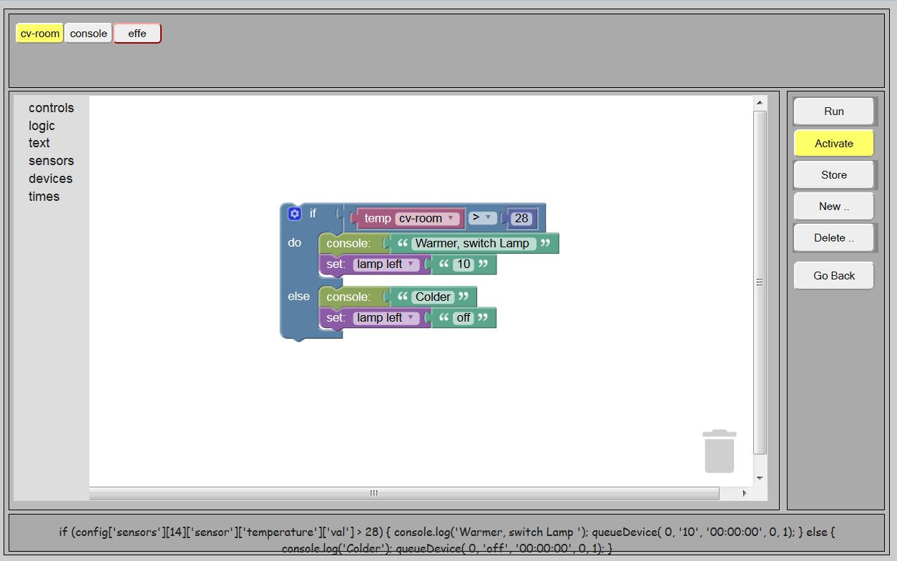

Starting with LamPI release 3.2, we offer another method for invoking devices based on time, alarms or other events. With the new rules engine which is based on Google's blockly developers kit it is possible
The editor screen has the following layout: At the right - Or anywhere else if defined by the CSS file in use- is the enu area. There are 5 major and standard commands recognized:
In the header section all rules that are defined are displayed. In the example below that is "cv-room", "console" and "effe". By pressing one of these buttons, the active screen loads with the corresponding rule. The yellow hover defines which rule is visible on the screen at that moment and being worked on. The red border outline of a button tells us that the corresponding rule is active on the LamPI-node.js daemon.
The rules editor can be change from the LamPI Gui by visiting the config section and then select "rules" from the header menu bar. Alternatively the user can also start the rules editor directly from the browse by the following URL: "http://<Your-IP>/rules".

Every rule that is made on the screen will translate in two fields in our rules array: The jrule field which is displayed in the message area of the screen contains the Javascript representation of the rule as it is executed by the daemon if we activate that rule in LamPI. The brule field of the rules object contains the internal rule definition which is used by blockly to build up all visible elements of the rules so that we can change the rule, delete it or store the rule in the database for later use.
The "cv-room" rule defined in our example has the following jrule field for the rule in the database. I have used a pretty print method which makes the rules readible:
if (config['sensors'][14]['sensor']['temperature']['val'] > 28) {
console.log('Warmer, switch Lampi ');
queueDevices(0,'10','00:00:0:00',0,1);
}
else {
console.log('colder');
queueDevices(0,'off','00:00:0:00',0,1);
}
Under the hood we have our own blockly defnitions put in a dedicated file: /home/pi/www/rules/myBlocks.js. For every Blockly element we define 2 functions: a definition file to support the editor in creating our object and a generator file to help generating the right javascript functions once we include our own blockly in LamPI.
This para exmplains how to make a new rule using the visible editor.
June 25, 2015